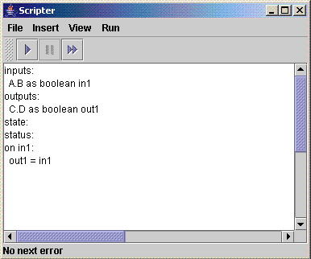
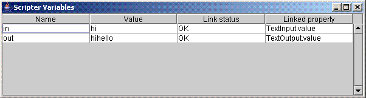

The Scripter is an experimental application that allows a user to manipulate ECT components by writing scripts (rather than by specifying component configurations graphically through the Graph Editor). Scripts are written in a version of the BeanShell language which has had extra feature added to make it usable in this situation. The Scripter application provides functionality which can assist a user in the development of a script, and to browse details of a script which is currently being executed.
Scripts developed and used in the scripter application have access to any components that are available through the Graph Editor. As such, they are allowed to access and modify any properties defined by such components, thereby allowing scripts to manipulate any hardware devices associated with a component. It is also possible to develop scripts that can perform tasks when the values of any monitored properties change, and it is hoped that the combination of these simple facilities, along with the general purpose scripting facilities provided by BeanShell, will provide sufficient flexibility to specify many different ubicomp installations.
In fact, it may well be the case that specifications of complex behaviours involving large numbers of components may well be simpler through the use of scripting than through the use of the graph editor, as complex graphs can become difficult to understand, maintain and expand.
The rest of this section describes how to get started with the Scripter, and describes how to construct a simple installation using software-only components. It is hoped that this will provide sufficient information to users who wish to construct more complex installations. The section assumes that the reader is familiar with the ECT graph editor, and associated technologies. You should follow the Learning to use ECT tutorial if this is not the case (and also the ECT Overview if you are not familiar with the ECT system.
To get started with the Scripter, you will need to have downloaded and unzipped the latest full release of ECT (rather than the cut-down release). See the Getting Started guide for information on how to do this. Then follow this procedure (assumes that you are working on a windows machine):
You should now have 4 seperate graphical windows, labelled:
Of these, the last three windows are important to the scripter. You should use the Capability Browser to create instances of any components that you want to control through a script. These components will then appear on the Graph Component Editor. The Scripter window is used to write and test scripts, and any connections created by a script will also appear in the Graph Component Editor.
The scripter window will look something like figure 1 below:
The white text area on this window contains an example script (starting inputs:...). The three buttons above this text area are used to start the execution of this script (left button), stop the execution of a running script (middle button) and to browse any errors produced by a script (right button). The current example script does not do anything useful without the creation of any components to control, so you shouldn't run it. Instead, the example section of this document will demonstrate how to build a simple example to show how the Scripter works.
inputs: TextInput.value as String in outputs: TextOutput.value as String out state: status: on in: out = in;
This section is used to define the component properties that are to be used as inputs to the script. In the example script above, this section only has one line:
inputs: TextInput.value as String in
This line means that property value on a component named TextInput will be considered as an input to the script, and that this property will be referable to using the variable in throughout the rest of the script.
Users can add as many different properties as they wish to the inputs section, providing that each is given a different variable name.
This section is used to define the component properties to which this script will output values, and in the example script above, this section also only has one line:
outputs: TextOutput.value as String out
In this case, this means that property value of component TextOutput will be used as an output of the script, and will be referable to through the variable out
This section specified what actions should occur when the value in variable in changes. Since this variable refers to property value of the component named TextInput, then this allows a user to specify an action to be performed when this property changes. In this case, the action that is to be performed is to set the variable out to the value of the variable in:
on in: out = in;
Since variable out refers to property value of the component named TextOutput, then this has the effect of setting this property to the value of the value property of the TextInput component.
Note that the text in this section, ie the line that says out = in; is called a scriptlet. Scriptlets can consist of multiple lines of BeanShell code, but please ensure that these lines are seperated by a semi-colon, eg
on in: in = in/2; out = in;
After having started the script running, take a look at the graph editor window, which might look something like figure 2 below:
The component labelled ScripterGUI.main has been created by the Scripter application, and you can see that it has properties which correspond to variables defined in the input and output sections of the script, as described above. These properties are connected to the properties of other components from which they take input, and to which they provide output, and these connections have also been created automatically by the Scripter application.
TextInput.value as String in
to a script by directly typing it, the Scripter provides graphical features that can assist. Move your cursor to the place where you want a new line to be added, and select either Input... or Output... from the Insert menu. You will then be shown a dialog that looks something like figure 3 below:
This displays a selection of lines that might be added. Click on one, and click OK, and this line will be added at the position where your cursor is. If you add any components to your graph whilst viewing this dialog, then you might have to click Refresh for any properties you have to appear in the dialog.
Whilst the script is running, you can view the status of any variables that it defines. To do this, select the Variables option from the View menu, which will launch a dialog looking something like figure 4 below:
In this case, this indicates that the script has two variables named in and out, gives their values, indicates that they are linked to a component (ie their Link Status is given as OK) and gives the name of the property of the component to which they are linked.